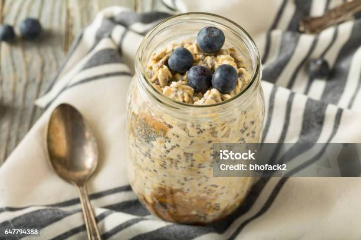

Home
Overnight Oats

Description
This overnight oats recipe is a sweet source of high protein and carbs that can be prepared in advance and stored for 4 days refridgerater.
Ingredients
- Pea Protein Powder
- Oat Milk
- Creatine Monohydrate
- Blueberries
- Sugar-free Syrup
- Chia Seeds
- Rolled Oats
- peanutbutter powder
Steps
- Add 3/4 cups of rolled oats to a mason jar
- Combine 1 cup of oat milk, 5 grams of creatine monohydrate, 4 tablespoons of peanutbutter powder, and 4 tablespoons of sugar-free syrup to a blender and blend until a smooth consistency is achieved.
- Add the blended items to the jar and stir in the oats to mix evenly.
- Top with blueberries and chia seeds
- Store refridgerated for no more than 4 days.